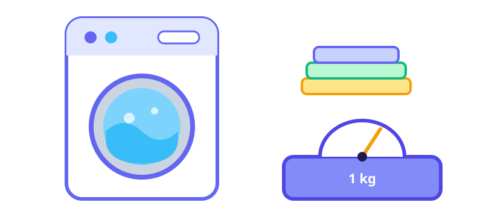
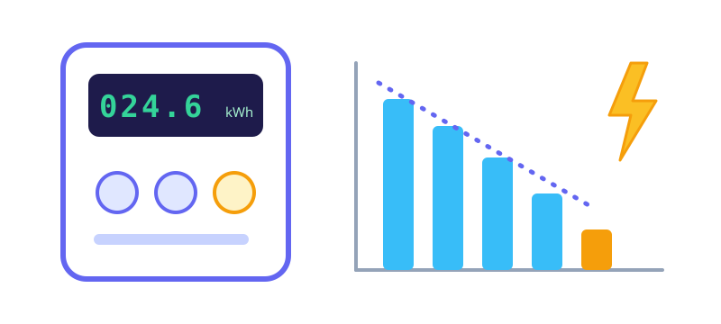
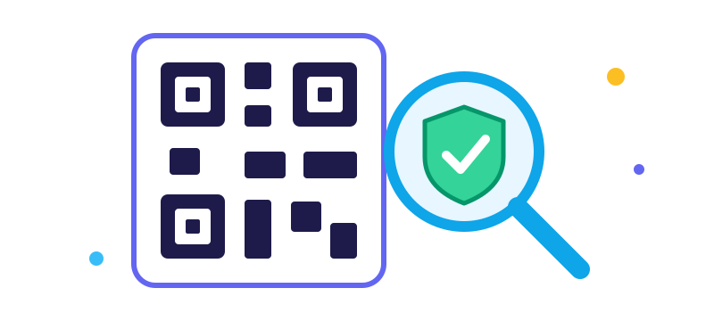

Cara Menentukan Harga Laundry Kiloan

Harga laundry kiloan yang terlalu murah membuat usaha ramai tetapi untungnya tipis. Harga yang terlalu mahal membuat pelanggan lari ke tempat lain. Jalan tengahnya adalah menghitung modal per kilo dengan jujur, lalu menambahkan margin yang masuk akal.
Komponen biaya yang harus dihitung
Banyak pemilik usaha baru hanya menghitung deterjen dan listrik. Padahal biayanya lebih banyak:
- Sewa tempat atau cicilan, per bulan.
- Listrik dan air, termasuk pengering dan setrika.
- Deterjen, pewangi, pelembut, dan bahan lain.
- Gaji karyawan, dan gajimu sendiri kalau kamu ikut bekerja.
- Plastik, hanger, label, dan bahan kemasan.
- Perawatan dan penyusutan mesin, karena mesin suatu saat harus diganti.
- Biaya antar jemput dan pemasaran, kalau ada.
Rumus modal per kilo
Modal per kilo = total biaya per bulan ÷ total kilo yang dicuci per bulan
Contoh, hanya ilustrasi dan bukan angka pasar. Misalkan biaya sebulan Rp9.000.000, dengan rincian sewa Rp2.500.000, listrik dan air Rp1.500.000, bahan Rp1.200.000, gaji Rp3.000.000, dan sisanya perawatan dan lain-lain. Dalam sebulan kamu mencuci 1.800 kg. Modalnya adalah 9.000.000 ÷ 1.800 = Rp5.000 per kilo.
Tambahkan margin
Margin adalah keuntunganmu. Kalau kamu menginginkan keuntungan 30% dari modal, harganya Rp5.000 × 1,3 = Rp6.500 per kilo. Pembulatan ke atas ke angka yang mudah, misalnya Rp7.000, membuat pencatatan lebih sederhana.
Perhatikan juga bahwa modal per kilo turun saat jumlah cucian naik, karena sewa dan gaji tetap. Itu sebabnya mengisi kapasitas mesin lebih penting daripada menaikkan harga sedikit demi sedikit.
Cek harga di sekitarmu
Kunjungi dua atau tiga laundry di dekat lokasimu dan catat harga, waktu selesai, dan layanannya. Harga yang kamu hitung harus masuk akal dibanding mereka. Kalau hitunganmu jauh lebih tinggi, cari pos biaya yang bisa ditekan atau tawarkan nilai tambah seperti pewangi lebih baik, lipatan rapi, atau antar jemput.
Menentukan beberapa jenis layanan
- Reguler (misalnya 2 sampai 3 hari): harga dasar.
- Ekspres (selesai dalam hari yang sama atau 1 hari): biasanya lebih mahal karena memotong antrean dan menambah tenaga. Banyak usaha menambah sekitar setengah sampai dua kali harga reguler, tergantung seberapa cepat.
- Cuci saja, setrika saja, atau keduanya: pisahkan harganya karena biaya tenaga berbeda.
- Barang besar: selimut, bedcover, gorden, dan karpet lebih baik dihargai per potong, karena berat, waktu pengeringan, dan ruang mesinnya tidak sebanding dengan pakaian biasa.
Tetapkan juga minimal berat, misalnya 2 atau 3 kg, supaya cucian yang sedikit tetap menutup biaya mesin dan tenaga.
Kesalahan yang sering terjadi
- Tidak menghitung gaji sendiri, lalu heran kenapa untung bersih terasa kecil.
- Memberi diskon besar untuk menarik pelanggan sehingga harga jatuh di bawah modal.
- Tidak mencatat nota dan berat cucian, sehingga tidak bisa menghitung modal per kilo yang sebenarnya.
- Lupa memasukkan biaya penyusutan mesin.
- Tidak meninjau harga setelah tarif listrik, sewa, atau harga bahan naik.
Catat setiap bulan
Modal per kilo bukan angka sekali jadi. Hitung ulang tiap beberapa bulan dengan data terbaru: total biaya, total kilo, dan jumlah cucian ekspres. Kebiasaan sederhana ini membuatmu tahu kapan harga perlu disesuaikan sebelum keuntungan tergerus.
Panduan lainnya
Lima Cara Sederhana Menenangkan Pikiran yang Terlalu Penuh
Teknik napas, grounding, menulis, bergerak, dan bicara dengan orang lain untuk saat kepala terasa ramai, serta kapan sebaiknya mencari bantuan profesional.

Cara Mencatat dan Memperkirakan Token Listrik Prabayar
Kenapa token listrik terasa cepat habis, cara menghitung pemakaian harian, dan rumus sederhana untuk memperkirakan kapan token habis.

Cara Mengecek Kode QRIS Sebelum Membayar
Modus QRIS palsu yang sering terjadi dan langkah sederhana untuk memeriksa kode QR sebelum kamu menekan tombol bayar.